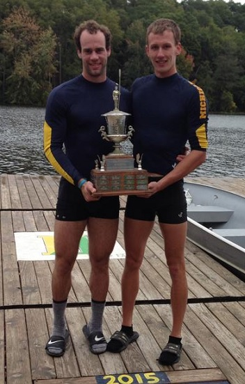

|
Pairs Matrix
October 4, 2014
ANN ARBOR, MI
– On Saturday, October 4th, the varsity squad of the University of Michigan Men's Rowing Team completed the annual autumnal tradition of the Pairs Matrix. The Matrix is a group of top varsity oarsmen divided into different flights, with each flight featuring four ports and four starboards. Each oarsman then rows four 900 - meter pieces, once in every shell and with every corresponding rower on the opposite side, as well as twice in bow and twice in stroke. Each pair is launched from the start (a buoy in the corner of the lower dam on Argo Pond) in 20 - second intervals, with no pair launching in the same order twice. At the end of the pieces, the times of each individual rower are added up to calculate their total time.

Since each rower spends two pieces bowing, steering is a critical factor in the racing. A similar sense of awareness is needed by the stroke, as the pieces have a maximum rate of 34 strokes per minute. Results of the Matrix are important, as they are the central selection process for the team's contingent at the Head of the Charles in Boston later in the month.
After the October 10K test on the erg, the top varsity performers were placed into different heats, the first of which were held on the morning of Thursday, October 2nd. In the first heat, Junior Alex Brown dominated the port side, beating Sophomores Jake Presto, Jack Jasper, and Grey Braybrooks by nearly 40 seconds. This standout performance punched Brown's ticket to Saturday's Grand Final, and gave him Friday away from racing to prepare. On the starboard side, Senior and reigning Matrix champion Matt Herbers also qualified for the Grand Final, winning in a total time of 13:19.0. The remaining starboards (Jim Garay, Damian Rotarov, and Ben Rebertus) were placed in Friday's repechages, along with the three losing ports and other oarsmen, to compete for the final sports in Saturday's Grand Final.
There was more parity in the results of the second heat, held later Thursday morning. On the port side, Senior Dan Vitas was the victor. However, due to a conflict, Thursday was Vitas' only day in the Matrix, and his spot in the Grand Final was awarded to the second place finisher, Ian McGraw. McGraw, a Junior, was only 6.3 seconds slower than Vitas overall. The third and fourth place finishers, Senior Wes Vear and Sophomore Ben Getz, were placed in Friday's repechages. On the starboard side, Junior William Burstein handled Juniors Alika Ziker and Mitchell Tyson, as well as Senior Ben Dirkse, winning by a 10.7 second margin and securing his spot in Saturday's top heat. Ziker, Tyson, and Dirkse moved on to the repechages.
On Friday, October 3rd, the two repechages were held. From these heats, four were selected to fill out the remaining spots in the Grand Final, while eight were chosen to race in Saturday's Petite Final. In blustery conditions, Ziker won by 8.9 seconds over Rotarov and Sophomores Toby Buth and Garrett Klumpar. However, the second repechage featured fast and tight racing from the starboard side, with Garay and Tyson tying for first, finishing only 0.3 seconds apart over nearly 14 minutes of racing. This close finish advanced both to the Grand Final, leaving Ziker in the Petite. Third place finisher Rebertus was also selected for the Petite Final, along with Rotarov and Buth.
On the port side, a strong performance from Team President Vear in the morning gave him a Grand Final appearance for the second year in a row, with Presto and Jasper advancing to the Petite Final. Junior Lucien Gerondeau dominated the later repechage, sending himself to the Grand while Getz and Braybrooks were sent to the Petite.
The stage was set for dramatic racing on the day of finals. Rebertus won the starboard side of the Petite Final, with Ziker finishing second, Buth third, and Rotarov fourth. A surprise performance from Getz ended with his victory of the port side in the Petite, with Jasper finishing second and Braybrooks and Presto tying for third.
The Grand Final, beginning at 9:00 AM, featured challenging conditions with cold temperatures and an unusual amount of chop on Argo Pond. After the first piece, Herbers and Brown led their respective sides after finishing in 3.08.8 in the pair together. Garay and Vear stood in second place with 3.13.4, with Burstein and McGraw in a close third at 3.13.8 and the Tyson / Gerondeau pair in fourth at 3.20.1. After reshuffling and Piece II, however, Burstein moved into first after finishing his piece with Vear in 3:08.8, while Brown remained in first after a 3:12.9 piece with Tyson. The third piece proved to be a historic and ultimately deciding one. Herbers and Vear, both returning from last year's Varsity 8, threw down a blistering 3:04.3, setting a new all - time record by 1.6 seconds. This put both oarsmen in the lead on their respective sides heading into the final piece. In the fourth piece, Brown and Burstein finished in 3:07.0, enough to push Brown into first place. Burstein, who was in third place behind Herbers and Garay entering the fourth and final piece, passed Garay and nearly caught Herbers for the victory, finishing only 1.2 seconds behind him overall after nearly 13 minutes of racing. Traditionally, a tie is awarded in Matrix races for finishes closer than two seconds; however, this is not the case in the Grand Final, and Herbers was crowned for the second straight year.
The final results on port were, in order: Brown, Vear, McGraw, and Gerondeau. On starboard, the order went: Herbers, Burstein, Garay, and Tyson. The average piece in this year's Grand Final was 3:15.7, besting the 2006 Matrix's previous record of 3:17.5.
The squad will continue to train in Ann Arbor before the Head of the Grand next weekend, with the 8 and 4 leaving for the Head of the Charles the week after.
###
|